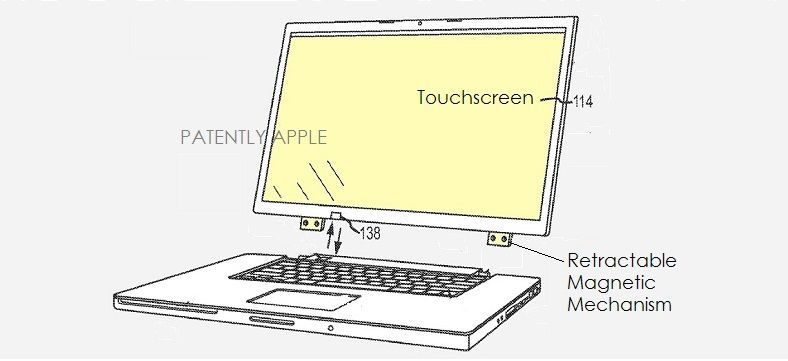

Apple invented the ‘ultimate laptop’ back in 2011, decided not to produce it
Right after Microsoft unveiled the Surface Book (a.k.a., the “ultimate laptop”), I wrote that I hope Apple copies the idea and creates a similar iPad/MacBook combo. I said that despite the fact that Apple has steadfastly insisted it will never merge iOS and OS X. In Apple’s view, there are specific purposes for the iPad and the MacBook, so seeing a Mac with a touchscreen display seems out of the question.
However, it looks like Apple studied the “ultimate laptop” idea as far back as 2011, when the company first filed for a patent describing such a piece of technology.
The Surface Book’s most striking feature is its detachable display that impressed the audience during Microsoft’s announcement. The feature was so secret that the company never demoed to anyone until the event except for Microsoft execs.
The patent was originally filed in the third quarter of 2011 during a time when Apple was selling iPads like hot cakes. The documentation shows that Apple is interested, at least in theory, in such MacBook concepts. At the same time, Apple routinely files patents on all sorts of inventions and many of them never get used in commercial products.
Filed in the third quarter of 2013, the keyboard patent doesn’t specifically mention 3D Touch, but considering that versions of the pressure-sensitive UI interaction method are available across Apple’s products — including iPhone, Apple Watch and MacBook — it wouldn’t be surprising to see future keyboard versions incorporate 3D Touch support.